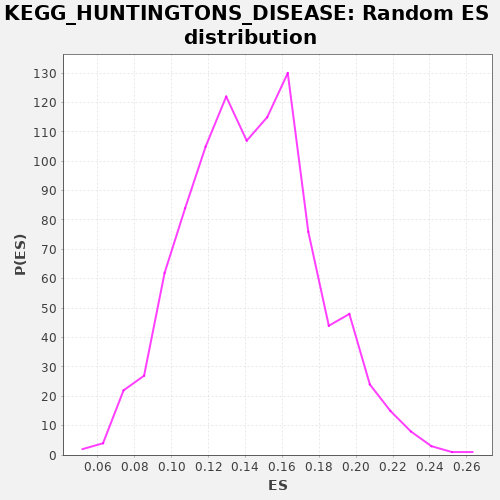

| | | Dataset | drug_embeddings_gsea |
| Phenotype | NoPhenotypeAvailable |
| Upregulated in class | na_neg |
| GeneSet | KEGG_HUNTINGTONS_DISEASE |
| Enrichment Score (ES) | -0.089649685 |
| Normalized Enrichment Score (NES) | NaN |
| Nominal p-value | NaN |
| FDR q-value | 1.0 |
| FWER p-Value | 0.0 |
Table: GSEA Results Summary
 Fig 1: Enrichment plot: KEGG_HUNTINGTONS_DISEASE
Fig 1: Enrichment plot: KEGG_HUNTINGTONS_DISEASE
Profile of the Running ES Score & Positions of GeneSet Members on the Rank Ordered List
| PROBE | GENE SYMBOL | GENE_TITLE | RANK IN GENE LIST | RANK METRIC SCORE | RUNNING ES | CORE ENRICHMENT | | 1 | UCP1 | | | 285 | 1.000 | -0.0093 | No |
| 2 | NDUFB1 | | | 634 | 1.000 | -0.0230 | No |
| 3 | NDUFB3 | | | 682 | 1.000 | -0.0160 | No |
| 4 | COX6A2 | | | 715 | 1.000 | -0.0079 | No |
| 5 | PLCB4 | | | 1452 | 1.000 | -0.0482 | No |
| 6 | COX7B | | | 1771 | 1.000 | -0.0598 | No |
| 7 | SDHD | | | 2074 | 1.000 | -0.0703 | No |
| 8 | SLC25A31 | | | 2128 | 1.000 | -0.0637 | No |
| 9 | UQCR11 | | | 2189 | 1.000 | -0.0576 | No |
| 10 | NDUFA1 | | | 2461 | 1.000 | -0.0660 | No |
| 11 | NDUFA3 | | | 2555 | 1.000 | -0.0621 | No |
| 12 | NDUFB4 | | | 2957 | 1.000 | -0.0794 | No |
| 13 | COX7A2 | | | 2993 | 1.000 | -0.0716 | No |
| 14 | COX7A2L | | | 3184 | 1.000 | -0.0744 | No |
| 15 | NDUFC2 | | | 3188 | 1.000 | -0.0643 | No |
| 16 | DNAL4 | | | 3250 | 1.000 | -0.0583 | No |
| 17 | NDUFB2 | | | 3339 | 1.000 | -0.0540 | No |
| 18 | NDUFS6 | | | 3857 | 0.955 | -0.0798 | Yes |
| 19 | NDUFB8 | | | 3887 | 0.953 | -0.0720 | Yes |
| 20 | NDUFB7 | | | 3935 | 0.949 | -0.0655 | Yes |
| 21 | TAF4B | | | 3974 | 0.946 | -0.0584 | Yes |
| 22 | NDUFAB1 | | | 3988 | 0.945 | -0.0496 | Yes |
| 23 | COX8A | | | 4082 | 0.939 | -0.0464 | Yes |
| 24 | COX6C | | | 4396 | 0.921 | -0.0584 | Yes |
| 25 | POLR2L | | | 4458 | 0.918 | -0.0532 | Yes |
| 26 | NDUFS7 | | | 4759 | 0.902 | -0.0646 | Yes |
| 27 | CLTCL1 | | | 4765 | 0.902 | -0.0557 | Yes |
| 28 | NDUFA2 | | | 4947 | 0.893 | -0.0590 | Yes |
| 29 | COX6B2 | | | 4988 | 0.890 | -0.0526 | Yes |
| 30 | DNAI1 | | | 5172 | 0.882 | -0.0561 | Yes |
| 31 | DNAI2 | | | 5173 | 0.882 | -0.0471 | Yes |
| 32 | NDUFA5 | | | 5347 | 0.873 | -0.0500 | Yes |
| 33 | DNALI1 | | | 5458 | 0.868 | -0.0487 | Yes |
| 34 | NDUFS8 | | | 5517 | 0.864 | -0.0438 | Yes |
| 35 | GRM5 | | | 5536 | 0.863 | -0.0362 | Yes |
| 36 | NDUFB5 | | | 5733 | 0.852 | -0.0409 | Yes |
| 37 | COX5B | | | 5887 | 0.846 | -0.0428 | Yes |
| 38 | NDUFB6 | | | 5972 | 0.842 | -0.0399 | Yes |
| 39 | NDUFA6 | | | 6113 | 0.834 | -0.0410 | Yes |
| 40 | COX7C | | | 6446 | 0.818 | -0.0554 | Yes |
| 41 | NDUFS2 | | | 6497 | 0.816 | -0.0505 | Yes |
| 42 | TBPL1 | | | 6679 | 0.806 | -0.0546 | Yes |
| 43 | PLCB2 | | | 6783 | 0.802 | -0.0535 | Yes |
| 44 | COX4I1 | | | 6878 | 0.796 | -0.0518 | Yes |
| 45 | NRF1 | | | 6931 | 0.793 | -0.0473 | Yes |
| 46 | TFAM | | | 6999 | 0.790 | -0.0438 | Yes |
| 47 | NDUFS5 | | | 7068 | 0.787 | -0.0404 | Yes |
| 48 | NDUFV2 | | | 7105 | 0.784 | -0.0348 | Yes |
| 49 | UQCRB | | | 7195 | 0.779 | -0.0329 | Yes |
| 50 | CREB3L3 | | | 7353 | 0.770 | -0.0358 | Yes |
| 51 | SDHC | | | 7368 | 0.769 | -0.0289 | Yes |
| 52 | NDUFA7 | | | 7439 | 0.766 | -0.0259 | Yes |
| 53 | CREB3L4 | | | 7513 | 0.762 | -0.0231 | Yes |
| 54 | NDUFS1 | | | 7540 | 0.760 | -0.0171 | Yes |
| 55 | NDUFA8 | | | 7639 | 0.755 | -0.0161 | Yes |
| 56 | NDUFS4 | | | 7646 | 0.754 | -0.0087 | Yes |
| 57 | TBPL2 | | | 7758 | 0.748 | -0.0087 | Yes |
| 58 | NDUFB10 | | | 7929 | 0.738 | -0.0128 | Yes |
| 59 | COX6A1 | | | 7963 | 0.737 | -0.0075 | Yes |
| 60 | SLC25A6 | | | 8082 | 0.729 | -0.0081 | Yes |
| 61 | COX6B1 | | | 8090 | 0.729 | -0.0012 | Yes |
| 62 | UQCRH | | | 8092 | 0.729 | 0.0062 | Yes |
| 63 | COX4I2 | | | 8323 | 0.715 | -0.0022 | Yes |
| 64 | UQCR10 | | | 8420 | 0.710 | -0.0015 | Yes |
| 65 | POLR2K | | | 8513 | 0.704 | -0.0006 | Yes |
| 66 | POLR2H | | | 8545 | 0.702 | 0.0044 | Yes |
| 67 | CYC1 | | | 8600 | 0.699 | 0.0079 | Yes |
| 68 | POLR2J | | | 8638 | 0.698 | 0.0125 | Yes |
| 69 | CLTB | | | 8752 | 0.691 | 0.0118 | Yes |
| 70 | CLTA | | | 8758 | 0.691 | 0.0185 | Yes |
| 71 | NDUFV3 | | | 8765 | 0.690 | 0.0252 | Yes |
| 72 | TAF4 | | | 8866 | 0.684 | 0.0253 | Yes |
| 73 | POLR2F | | | 9010 | 0.676 | 0.0224 | Yes |
| 74 | IFT57 | | | 9277 | 0.660 | 0.0109 | Yes |
| 75 | PLCB3 | | | 9283 | 0.659 | 0.0174 | Yes |
| 76 | DCTN4 | | | 9591 | 0.640 | 0.0028 | Yes |
| 77 | UQCRC1 | | | 9602 | 0.639 | 0.0087 | Yes |
| 78 | AP2S1 | | | 9636 | 0.637 | 0.0129 | Yes |
| 79 | POLR2I | | | 9651 | 0.636 | 0.0185 | Yes |
| 80 | UQCRQ | | | 9825 | 0.623 | 0.0130 | Yes |
| 81 | COX5A | | | 9986 | 0.612 | 0.0083 | Yes |
| 82 | NDUFA9 | | | 10012 | 0.610 | 0.0128 | Yes |
| 83 | NDUFA10 | | | 10254 | 0.592 | 0.0023 | Yes |
| 84 | ITPR1 | | | 10353 | 0.591 | 0.0017 | Yes |
| 85 | UQCRC2 | | | 10432 | 0.589 | 0.0023 | Yes |
| 86 | DCTN2 | | | 10436 | 0.589 | 0.0082 | Yes |
| 87 | CREB3L2 | | | 10451 | 0.589 | 0.0132 | Yes |
| 88 | HIP1 | | | 10546 | 0.588 | 0.0128 | Yes |
| 89 | NDUFS3 | | | 10740 | 0.585 | 0.0055 | Yes |
| 90 | VDAC3 | | | 11069 | 0.579 | -0.0111 | Yes |
| 91 | POLR2E | | | 11140 | 0.577 | -0.0099 | Yes |
| 92 | SLC25A4 | | | 11162 | 0.577 | -0.0055 | Yes |
| 93 | PLCB1 | | | 11286 | 0.575 | -0.0080 | Yes |
| 94 | POLR2C | | | 11462 | 0.572 | -0.0142 | Yes |
| 95 | UQCRFS1 | | | 11492 | 0.571 | -0.0103 | Yes |
| 96 | POLR2G | | | 11519 | 0.571 | -0.0063 | Yes |
| 97 | DCTN1 | | | 11535 | 0.570 | -0.0015 | Yes |
| 98 | VDAC2 | | | 11595 | 0.569 | 0.0003 | Yes |
| 99 | POLR2D | | | 11760 | 0.565 | -0.0052 | Yes |
| 100 | NDUFB9 | | | 11775 | 0.565 | -0.0003 | Yes |
| 101 | AP2A2 | | | 11849 | 0.563 | 0.0004 | Yes |
| 102 | AP2A1 | | | 11854 | 0.563 | 0.0059 | Yes |
| 103 | GRIN1 | | | 11942 | 0.561 | 0.0057 | Yes |
| 104 | HAP1 | | | 11985 | 0.560 | 0.0086 | Yes |
| 105 | RCOR1 | | | 11987 | 0.560 | 0.0142 | Yes |
| 106 | POLR2B | | | 12278 | 0.553 | -0.0000 | Yes |
| 107 | PPID | | | 12467 | 0.549 | -0.0073 | Yes |
| 108 | NDUFV1 | | | 12506 | 0.548 | -0.0043 | Yes |
| 109 | AP2B1 | | | 12533 | 0.547 | -0.0005 | Yes |
| 110 | CREB3 | | | 12570 | 0.546 | 0.0026 | Yes |
| 111 | CLTC | | | 12625 | 0.544 | 0.0045 | Yes |
| 112 | SDHA | | | 12883 | 0.535 | -0.0077 | Yes |
| 113 | NDUFA4 | | | 13082 | 0.527 | -0.0159 | Yes |
| 114 | CREB3L1 | | | 13084 | 0.527 | -0.0105 | Yes |
| 115 | BDNF | | | 13121 | 0.526 | -0.0076 | Yes |
| 116 | AP2M1 | | | 13180 | 0.523 | -0.0063 | Yes |
| 117 | GPX1 | | | 13236 | 0.520 | -0.0047 | Yes |
| 118 | GRIN2B | | | 13316 | 0.517 | -0.0048 | Yes |
| 119 | CREB5 | | | 13498 | 0.506 | -0.0121 | Yes |
| 120 | TGM2 | | | 13775 | 0.488 | -0.0260 | Yes |
| 121 | APAF1 | | | 13902 | 0.478 | -0.0298 | Yes |
| 122 | PPARGC1A | | | 13948 | 0.472 | -0.0280 | Yes |
| 123 | CREB1 | | | 14097 | 0.456 | -0.0335 | Yes |
| 124 | CYCS | | | 14106 | 0.455 | -0.0294 | Yes |
| 125 | DLG4 | | | 14146 | 0.450 | -0.0275 | Yes |
| 126 | HTT | | | 14160 | 0.448 | -0.0238 | Yes |
| 127 | BBC3 | | | 14183 | 0.443 | -0.0208 | Yes |
| 128 | TBP | | | 14203 | 0.440 | -0.0176 | Yes |
| 129 | VDAC1 | | | 14214 | 0.439 | -0.0137 | Yes |
| 130 | SIN3A | | | 14269 | 0.430 | -0.0130 | Yes |
| 131 | PPARG | | | 14285 | 0.426 | -0.0097 | Yes |
| 132 | SOD2 | | | 14345 | 0.414 | -0.0095 | Yes |
| 133 | HDAC2 | | | 14480 | 0.369 | -0.0150 | Yes |
| 134 | SP1 | | | 14485 | 0.367 | -0.0115 | Yes |
| 135 | BAX | | | 14599 | 0.339 | -0.0158 | Yes |
| 136 | CASP9 | | | 14609 | 0.333 | -0.0130 | Yes |
| 137 | POLR2A | | | 14616 | 0.327 | -0.0100 | Yes |
| 138 | CASP8 | | | 14639 | 0.303 | -0.0084 | Yes |
| 139 | SOD1 | | | 14646 | 0.295 | -0.0058 | Yes |
| 140 | HDAC1 | | | 14662 | 0.261 | -0.0042 | Yes |
| 141 | CREBBP | | | 14669 | 0.236 | -0.0022 | Yes |
| 142 | CASP3 | | | 14673 | 0.233 | 0.0000 | Yes |
| 143 | EP300 | | | 14689 | 0.153 | 0.0005 | Yes |
| 144 | TP53 | | | 14698 | 0.000 | -0.0000 | Yes |
Table: GSEA details [plain text format]

Fig 2: KEGG_HUNTINGTONS_DISEASE: Random ES distribution
Gene set null distribution of ES for KEGG_HUNTINGTONS_DISEASE